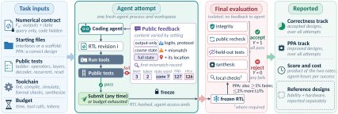

Projects
AIChipBench
Benchmarking LLM Agents for Automated AI Accelerator Design
AIChipBench asks LLM coding agents to implement quantized Qwen3.5, Gemma 3, Gemma 4, and Llama 3.2 decoders in synthesizable register-transfer-level (RTL) code. An executable integer reference specifies the outputs and the stored state at every decoding step. Agents debug against public tests under fixed budgets, and their frozen designs are graded on held-out token sequences, resets, memory stalls, and synthesis. A second track asks agents to speed up a correct design at nearly fixed area without breaking it.
9,136
agent attempts
4
coding agents
12
correctness tasks on 7 decoders
4
PPA targets

